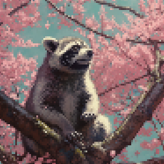
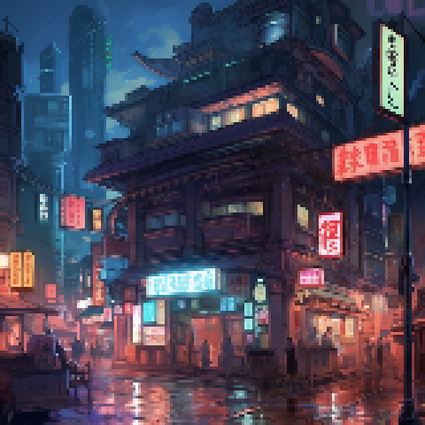
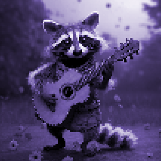
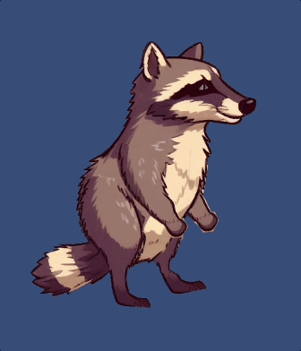
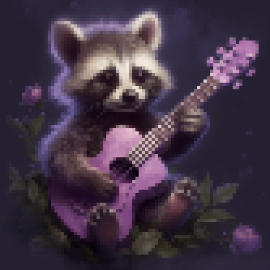

職を得た！🥹🥹 1/600で当たる確率！ 給料は安いけど、今は文句を言っている場合ではありません。 次の目的地は東京。
Empanacho Studio は私の痛みに対処する方法として始まりました。 私はゲームを作ったり物語を書いたりするのが好きですが、東京に住んでいる間にそれを趣味としてやることになるとは思っていませんでした。
ゆっくりとした旅になるだろうが、急いではいない... 😌

私はこれを日本語で書いています。 日本にもアライグマの似たバージョンであるタヌキがいると聞きました。
私が日本語で書いている理由は 2 つあります。日本語を勉強していることと、日本に移住するかどうか（仕事）を待っていることです。
今週はかなりストレスの多い週でしたが、私はシンクロニシティに注意を払い、それが私をどこへ導いてくれるのかを確認しています。 そしてそれはすべて日本を指しています。
だから Empanacho には取り組んでいないんです。
シンクロニシティの一部で、私は日本の Empanacho Studio をゲーム開発スタジオとして登録するというアイデアを思いつきました。 しかし、日本では法律で掛け持ちはできないと思います。 でも、方法は見つけます。
そうですね、数時間以内に次の目的地が日本かどうかがわかります。 エンパナチョゲームは日本でも開発されるのでしょうか？
Zero progress in terms of code. I've been coding the other project that it will be come startup apparently.
I've been just getting better at Ukulele since I have plans to make the music for Empanacho.
Destiny has it, I have the chance to move to Japan. I'm sort of excited... But I think I don't want to let myself down.
I recently experienced what it means to reconnect with your body through dance. Andra was her name, and she allowed to free myself physically speaking. It made me wonder what should a human feel while jumping and running like a raccoon. Interesting feeling.
Learnt that raccoons are loved in Japan... Maybe, I should make some scenes in a japanese city. I mean, raccoons love cities.

A few weeks ago, perhaps more than a month. I went to San Cristobal de Las Casas. I was dealing with what I thought I had under control, a childhood trauma. So, I went to San Cristobal to be with myself and find some answers of how some recent events had broke even more.
It was night. At was on the street, the so called Camino de Guadalupe, sit. Some dude then from Peru sit next to me and started playing his guitar. He was clearly a very native Peruvian. He, as expected, played some Andina music. The song was Ojos Azules. And yeah, it made me cried.
It moved me very deeply. I felt so connected to him. He did look like me but with a more darker skin.
So they say that everything happens for a reason. Whether you believe in destiny or synchronicities, I believe that the purpose of that moment was this: Empanacho will have a Ukulele and his music will be Andina.
It just feel right. And such is life... 😔😌

Empanacho is fictional story, of course, based on my life. So, it was only logical to go back to the root of all traumas, my old home. I traveled to my hometown for mother's day. I arrived quite late, around 10pm, and went to bed at 4am. My 'ama and I started talking about our traumas and generational traumas. As expected, it was quite depressing however it provided a lot of information to be incorporated into Empanacho-verse.
This day, thus, was more about the future storytelling to happen for Empanacho's origin.
Yesterday, before traveling, I watched a video of some pro indie game dev. He's advice was not to make the game our identity. Well, I think I have failed. Since I only write stories about forked up characters... and the only pain and suffering I know is my own. How could I possible create a forked up hero/villian if I haven't lived the pain? How can that be done? I'm assuming is possible I just don't know how.
So, this is pretty obvious involved a lot of things to do: music, art, coding, marketing and social networks. I'm not even counting accounting and legal stuff 😔
I'm starting to consider to have a minidemo, developed as much as possible the story and then use that for a kickstarter campaing.
The odds of getting funded? Zero. Who will care for a sad story of a raccoon, his trauma and his battle against interdimensional forces to protect the One True Empanada? This has become my identity that clearly is just a coping mechanism to keep on moving. The story is full of personal details and projections. Why would anyone care? After all, we all have our struggles. This is no difference.
Today was clearly a very demoralized day.
To make the matter worse, I'm still unemployed.
A minigames for a person like me, it's not so mini. Spent some time in editing images and learning the Unity3D Animator.
Small steps, sparks, small steps.

This is not the final product nor the actual design of Empanacho. I'm still rooting for a pixel art version and Empanacho's furry is purpleish.
Well, zero progress when it comes to code. I found the reason for my mood swigns. And I decided to use them to fuel my dramatis personae.
I've been learning to play Ukulele. I figured that Empanacho being so skillful, he will have a Ukulele, well, it's a guitar for his size 🤣.
When it comes to music, I tend to create simple songs. Basically anyone can play them and I recovered that. I was able to play ukulele and almost immediately I started to do loops and minimal songs 😌.
Still, that's poor progress for Empanacho's game.

No progress. I've been dealing with mood swings (depression out of the blue). They are getting worse. Today I have my therapy session and it helped bit.
The rest is just biz meeting for my financial future. Good news but now I have to make a hard decision 😔
I need to find time for the minigames.
Today was mostly feedback from friends for Empanacho game. The enemies are going to be interdimensional beings. I don't like the idea of Empanacho fighting other Earth species. The nose mechanics got quite a good impression at least that was the feedback.
Also it was a day of phone calls, meetings, and job interviews since I need job or i will be running out of money and no Empanacho game. Cannot happen, I'm too invested in this already.
During this week, I'll know if I have enough money to not to spend any savings, a freelance job. In the meantime, today, also, I was gathering some Unity3D cheat sheets for constant lookup while I get used to it.
Tomorrow, I think I will start doing mini games for testing my knowledge/learning so far. This minigames, I think, can have mechanics that I can then put together for Empanacho.
Hopefully I'll be starting one possible startup with a friends 🫣 🤞
I guess the complain later will be I have no time for anything 🤣
I think I have a sense of complex logic to work on. I think I will have a set of skills the player can gain and difficulties through the journey.
The complex one is the peering into reality. I imagine this could provide a few paths Empanacho can take. How to show that? I dunno yet. I like the connection with the nose as in knows.
I still dunno the enemies Empanacho can encounter. I'm inclining for interdimensional beings.
I took another training course for Unity. I think I'm done. I got enough to create the game. During the training, I remember Chet and Falling. Two other games I have in mind that now I can easily see how to create them but I got to focus my energy on Empanacho for now.
I started working on the game design of Empanacho. I feel pretty confident with I have come up with. But this means it will take a lot of work to finish it 😬 but hey I'm unemployed so I have time 🥲.
I think it's time to start carrying my notebook to all places for sketching ideas and plans.
Ah! And I changed the logo for Empanacho Studio. I'm more satified with new one even though it's not exactly a logo but who cares this is my creation and I want it like this.
I started the Unity project. I haven't done Unity before so I took a few official tutorials. So far C# seems quite simple or maybe it's because I have been coding for a decade now. Not that I'm good at it. I consider myself mediocre program writer with flashes of genius.
Also wrote the folklore of Empanacho verse.
The difficult part, thuogh, will be the artistic aspect of the project. I have hopes in all those AI for image creation and shirt. The logo, for starters, was made with midjourney. I have no idea what kind of prompt i will need for landscapes and animated sprites. I pressume I just need to use the same seed? I dunno.
Because broken people are needed to save the world.
They know the bad, they are invested in stopping it.
That's what a hero is.